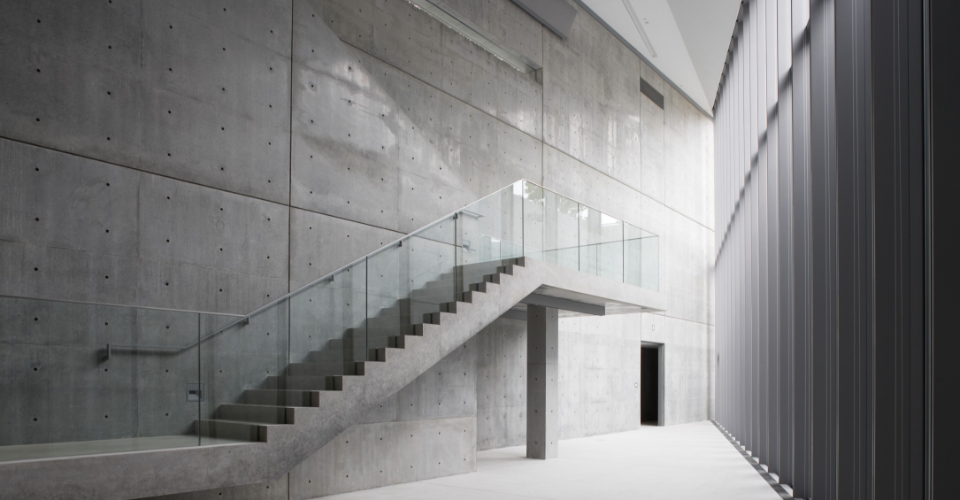

“21_21 DESIGN LIGHT is built in a green space “”Midtown Garden”” following Minato-ku Hinomachi
Park, within the 68,900㎡ area of Tokyo Midtown.”It was created on this site because we wanted to make it a place where people
gathered in the square could naturally enter.

Tokyo Midtown was created to be the center of design culture in Japan, driven by facilities
including 21_21 DESIGN SIGHT, Suntory Museum of Art and Tokyo Midtown Design Hub. Nearby Tokyo Midtown is home to The National
Art Center, Tokyo, Mori Art Museum, the design-themed complex AXIS, architecture specialist TOTO Gallery-MA and a number of
design offices. 21_21 DESIGN SIGHT is itself enhenced by synergy with those facilities in the area.